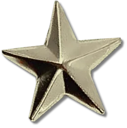

Habito. Conceptualizo. Materializo.
Soy Alejandra Correa, diseñadora crossmedia y directora de arte. Le doy forma visual a lo que tiene alma: ayudo a artistas, marcas y colectivos culturales con algo propio que contar a tener una imagen que de verdad se parezca a quienes son.
 ACPereira · 26
ACPereira · 26

arrastra y arma mi portada
Mis expedientes
Cuatro maneras de materializar una idea. Todas empiezan igual: habitando el tema hasta entenderlo desde adentro.
Dirección de arte
Conceptualizo y guío el rumbo visual: de una idea suelta a un universo visual completo.
Identidad visual
Identidades que evolucionan sin perder su esencia y viven en redes, impresos y web.
Diseño editorial
Magazines, catálogos, media kits e infografías donde la información se lee con calma.
Fotografía y audiovisual
Fotografía, reels y videoclips con encuadre, ritmo e intención.
Proyectos sobre la mesa
Fotografías sueltas de mi trabajo reciente. Muévelas, apílalas y abre la que te llame.
¿Te suena alguna de estas pistas?
Las ideas sueltas también tienen forma. Solo hay que habitarlas.
“Tengo muchas ideas sueltas y no sé cómo unirlas.”
“Mi marca se parece a todas las demás.”
“Lo que muestro no se parece a quien soy.”
“Tengo algo propio que contar, pero no sé cómo se ve.”
“Mis redes no cuentan el alma del proyecto.”
“Quiero una imagen que dure, no una que pase de moda.”
“Darle forma visual a lo que tiene alma, para que las identidades, prácticas y personas que suelen pasar desapercibidas se vean con el detalle que merecen.”— Mi propósito
¿Tienes algo propio que contar?
Si eres artista, marca o colectivo cultural y quieres una imagen que se parezca a ti, empecemos. Escríbeme o llena el brief en ALMA, mi app para contarme tu proyecto paso a paso.